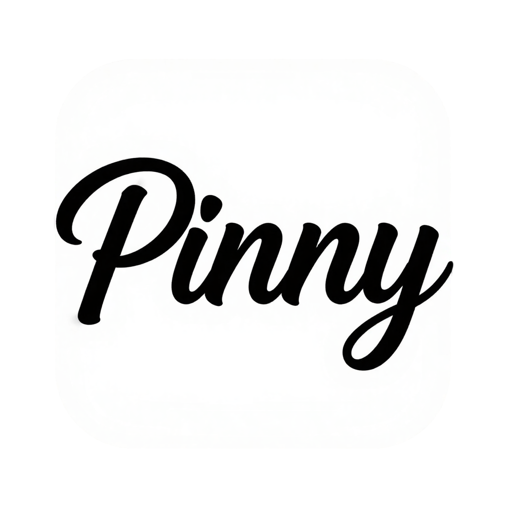
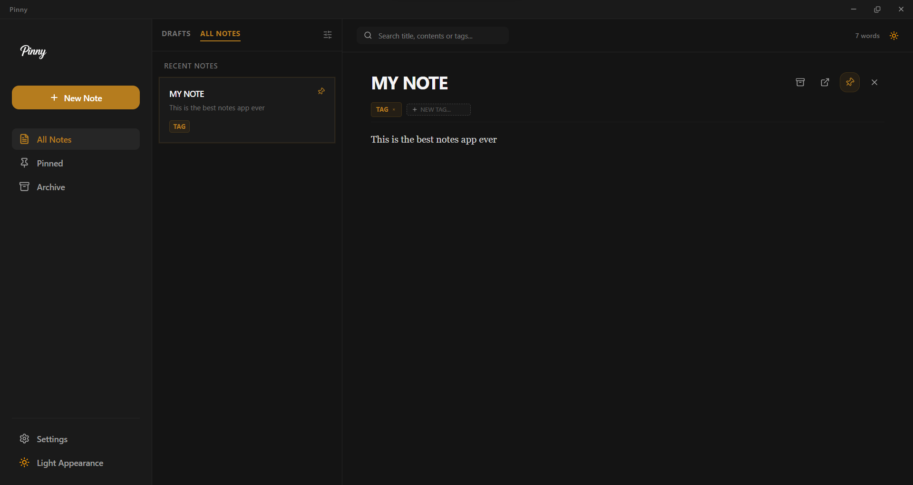

Pinny is a lightning-fast desktop note-taking app built for speed. Summon a quick capture box with a global shortcut, pin sticky notes to your screen, and keep 100% ownership of your data.
Requires Windows 10 or later. Automatic background updates included.

Press Ctrl + Shift + N from any application to instantly summon a clean capture box. Jot down your thought and press Enter to save.
Pop any note out into its own dedicated floating window that stays on top of your screen while you multitask or reference important details.
Your notes are stored securely and locally on your Windows machine via lowdb. No cloud servers, no subscriptions, complete data ownership.